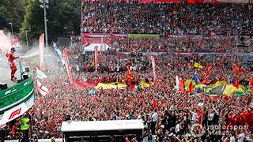

Ferrari S.p.A. je italijansko podjetje, ki proizvaja športne avtomobile v mestu Maranello. Podjetje je leta 1929 ustanovil Enzo Ferrari. Sprva je bilo podjetje usmerjeno v izdelavo dirkalnih avtomobilov. Sponzoriral je voznike in proizvajalce dirkalnih avtomobilov, preden se je usmerilo v proizvodnjo športnih avtomobilov za cestno uporabo leta 1947 kot Ferrari S.p.A.. Podjetje ima v lasti tudi zasebno dirkalno stezo Fiorano Circuit. Trenutni predsednik Ferrarija je Benedetto Vigna.
ZGODOVINA PODJETJA:Leta 1929 Enzo Ferrari je ustanovil podjetje Scuderia Ferrari, ki je bilo le približek današnjemu podjetju. Sprva je bilo podjetje namenjeno sponzoriranju voznikov amaterjev v dirkaškem svetu. 1943 leta se je Ferrarijeva proizvodnja preselila v Maranello, kjer se nahaja še danes. Leto pozneje je bila tovarna porušena med bombnim napadom v 2. svetovni vojni, vendar je bila naslednje leto že obnovljena. Pravi začetek Ferrarija je bilo leto 1947. Takrat so izdali prvi cestni avtomobil Ferrari 125 Sport. Poganjal ga je 1,5 litrski V12 bencinski motor. Prvo Grand Prix lovoriko je za Ferrari leta 1951 osvojil Froilán González, leto pozneje pa je v njihovem vozilu Alberto Ascari osvojil naslov svetovnega prvaka. Leta 1969 je podjetje Fiat kupilo 50% delež podjetja Ferrari, kar je pripomoglo k hitrejšemu razvoju podjetja. Proizvajati so začeli več različnih modelov, zgradili so dodatne proizvodne objekte. Pet let pozneje se je njihovi dirkaški ekipi pridružil legendarni Niki Lauda. 1987 leta je bil javnosti predstavljen zadnji izdelek (Ferrari F40) pod vodstvom Enza Ferrarija, ki je naslednje leto preminil. Njegovo mesto je prevzel Luca Cordero di Montezemolo. Pred sezono 1996 je Ferrari ponovno zaposlil novega voznika dirkalnih avtomobil, ki se je, tako kot Niki Lauda zapisal v zgodovino kot eden izmed najboljših voznikov. Za 30 milijonov letne plače so namreč zaposlili Michaela Schumacherja . Lastništvo podjetja se je ponovno spremenilo 2008 leta, ko je dodatni 25% delež kupil Fiat, ki ima v celoti 85% delež podjetja. 5% delež pripada podjetju Mubdala Development Company. To je podjetje, ki je delno sofinanciralo izgradnjo Ferrarijevega parka v Abu Dhabiju. Preostalih 10% pa je v lasti drugega sina Enza, Pierra Ferrarija.
EKIPA FORMULE 1: Scuderio Ferrari je leta 1929 ustanovil Enzo Ferrari in je do leta 1939 delovala pod okriljem Alfe Romeo. Ferrarijev prvi nastop v Formuli je bil v sezoni 1948 z dirkalnikom Ferrari 125, tako da je najstarejše še aktivno in tudi najuspešnejše moštvo v zgodovini Formule 1. Trenutna moštvena dirkača sta Charles Leclerc in Carlos Sainz, testni dirkači pa so Pedro de la Rosa, Davide Rigon in Marc Gené. Vodja moštva je Marco Mattiacci, športna direktorja Pat Fry in James Allison. Najuspešnejše obdobje Ferrarija v Formuli 1 je bilo v času Velike četverice, ki so jo tvorili Jean Todt (športni direktor), Ross Brawn (glavni strateg), Rory Byrne (glavni konstruktor) in Michael Schumacher in ki so med sezonama 1996 in 2007 osvojil šest konstruktorskih in pet dirkaških naslovov. Ferrarijevi številni in zvesti italijanski navijači so postali znani pod imenom tifosi.

Klikni za drugo stran